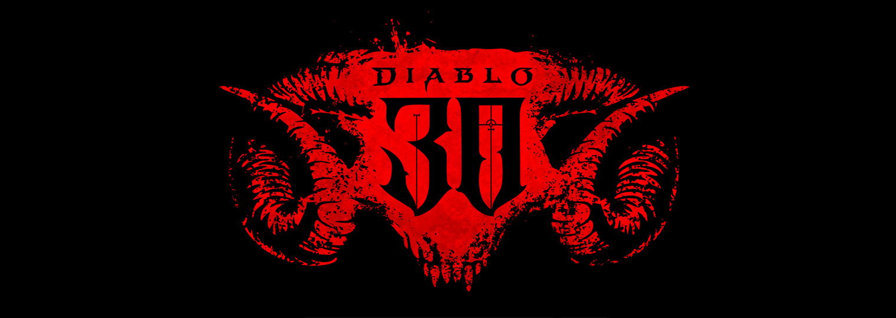

科技產品 T1

官方系列公告配圖，非 Diablo V 最終遊戲畫面 Blizzard Entertainment，權利屬原作者
Blizzard 宣布 Diablo V 開發計畫，目標 2029 年春季推出
發佈時間
Blizzard Entertainment｜Diablo V
新作已進入開發，官方給出2029年春季目標；不是今天可以購買或遊玩的版本。
- 官方首次揭露 Diablo V，故事設定為聖休亞瑞已淪陷。
- 推出目標為2029年春季，並安排開發者座談介紹方向。
- 此公告未提供可核對售價或硬體需求。
完整報告收合報告
事件背景與影響
正式公布讓玩家與開發生態能區分下一代作品和現有遊戲更新；但距離上市仍久，規格與商業條件不能從宣傳影片推定。
事件與發佈依據
Blizzard 開幕回顧頁 datePublished 為 2026-09-12T18:21:25Z；當日 BlizzCon 正式揭露，不以先前論壇猜測為依據。
收錄紀錄
歷史搜尋 Diablo V 與暗黑5未命中既有收錄，最近7天表亦無同項變更；首次收錄正式路線。
尚待確認
時程是廠商計畫，可能調整；未將預告畫面當成最終產品品質。
相關實體與概念
Blizzard、Diablo V、BlizzCon、產品路線。
科技產品 T2
Diablo IV 宣布登上 Nintendo Switch 2，合輯預定 9 月 15 日推出
發佈時間
Blizzard Entertainment｜Diablo IV: Age of Hatred Collection（Nintendo Switch 2）
Blizzard 給出 Switch 2 合輯的具體上市日期，內容包含本篇與兩個資料片。
- 官方列出9月15日推出，尚非截點時已供應。
- 合輯包含基本遊戲、Vessel of Hatred 與 Lord of Hatred。
- 本項是平台版本變更，與 Diablo V 的下一代路線分開記錄。
完整報告收合報告
事件背景與影響
新增平台會改變玩家的購買選擇；合輯內容已有官方說明，但效能與連線條件仍需以後續規格為準。
事件與發佈依據
同份官方公告的「Diablo IV on Nintendo Switch 2」段落；收錄新平台上市計畫，不預寫9月15日已上市。
收錄紀錄
Diablo與Switch組合式歷史查詢無命中，最近7天表二次確認無相同平台變更。
尚待確認
公告未充分列出效能、價格及各市場解鎖時刻；不自行補上。
相關實體與概念
Blizzard、Nintendo Switch 2、Diablo IV、平台移植。
全球焦點 1
 全球新聞主題配圖，非事件照片 NASA／Unsplash
全球新聞主題配圖，非事件照片 NASA／Unsplash
續報｜伊拉克承認沙烏地管線攻擊來自境內，撤換軍事指揮官
發佈時間
沙烏地替代輸油路線受損後，伊拉克政府面臨約束境內武裝與避免外交升級的壓力。
- 巴格達與利雅德均稱無人機來自伊拉克；伊拉克週六撤換一名軍事指揮官。
- AP 報導伊拉克承諾調查，當地親伊朗武裝承受壓力。
- East-West 管線停運屬已知背景，恢復時間未確定。
完整報告收合報告
事件背景與影響
軍事攻擊不只影響輸油，也牽動鄰國問責。調查是否能釐清發射單位，將影響局勢是否擴大；飛行來源仍不等於已證明最終下令者。
事件與發佈依據
Reuters 首發9月12日10:55 AEST，記錄當日伊拉克撤職；不是僅採12:44更新時間。
收錄紀錄
2026-09-12 已收錄前一日管線遭襲停運；新增伊拉克確認來源、調查與撤職，事件進入責任追查階段。
尚待確認
尚無獨立證據確認指揮鏈；不把政治指控寫成調查定論。
相關實體與概念
伊拉克、沙烏地、East-West pipeline、武裝組織、能源安全。
全球焦點 2
續報｜金磚峰會正式通過新德里宣言，呼籲中東各方克制
發佈時間
立場不同的成員形成共同文本，但共同呼籲不等於交戰方已達成停火。
- 宣言於9月12日峰會首日一致通過。
- 對中東戰爭表示關切，要求克制並主張多邊處理。
- 不將早先匿名消息人士的「預計通過」作為另一則新聞。
完整報告收合報告
事件背景與影響
共同宣言是正式外交成果，顯示成員至少能就最低共同立場協調；能否轉為降溫措施，仍須觀察後續談判與實際行動。
事件與發佈依據
Reuters Yahoo 頁面首發9月12日12:13 UTC，來源精度到分鐘；顯示秒欄00只為格式，不宣稱精確到秒。
收錄紀錄
2026-09-12 收錄莫迪與俄伊領袖的峰會前會談；本次新增金磚領袖一致採納宣言，不重列預告。
尚待確認
文字共識不等同可執行停火機制，不把峰會宣言說成和平協議。
相關實體與概念
BRICS、印度、新德里宣言、多邊外交。
全球焦點 3
烏克蘭公布今年空襲資產損失近 100 億美元，冬季財政壓力加深
發佈時間
官方將空襲與港口受阻的影響量化，指出基礎設施修復和財政空間同時受壓。
- 部長稱今年基礎設施與固定資產損失接近100億美元。
- 攻擊與港口實質受阻對經濟影響估為GDP約1.5個百分點。
- 他並稱約400億美元出口收入面臨風險；風險金額不是已實現損失。
完整報告收合報告
事件背景與影響
冬季公共服務需要資金，出口收入受損卻削弱財源。新增估值有助理解援助需求，但不同統計口徑不可直接相加當成總損失。
事件與發佈依據
Reuters 記錄經濟部長於9月12日基輔 YES 會議提出新估計；非把既有戰爭背景當成新事件。
收錄紀錄
搜尋 Kravchenko、100億與1.5的烏克蘭組合，未見此場新估值；不同於既有單次空襲報導。
尚待確認
數字為烏方估計，未取得完整計算方法，不與多年累積損失混用。
相關實體與概念
烏克蘭、Oleksandr Kravchenko、YES、黑海出口、戰時財政。
全球焦點 4
續報｜菲律賓渡輪火災死亡升至 76 人，仍有 13 人下落不明
發佈時間
搜救人員進一步進入燒毀船體，死亡數大幅上修，後續工作轉向尋人與身分確認。
- 最新通報76人死亡、13人失蹤、43人生還。
- Reuters 報導週六再尋獲41具遺骸。
- 船上人數以132人為最新基礎，原名冊134人中有2人未登船。
完整報告收合報告
事件背景與影響
更新改變災害規模的判斷，也使家屬辨識與事故調查更迫切。名冊修正與新尋獲遺體會改變數字，必須標明每次通報基準。
事件與發佈依據
AP 9月12日05:52:24 UTC報導週六新通報；Reuters 當日後續同樣確認76死。
收錄紀錄
2026-09-11 已收錄5死與初期失蹤數；本次新增76死、13人未尋獲與遺體辨識工作，並非重報起火。
尚待確認
起火原因未確定；較早35死、53或54失蹤為不同通報，不與最新數字併列成矛盾定論。
相關實體與概念
MV June Aster、Philippine Coast Guard、Coron、Palawan、海難。
全球焦點 5
美國法官暫阻聯邦招募要求求職者說明如何推進川普政策
發佈時間
法院支持工會挑戰，暫時阻止政府以政策申論題篩選常任文官求職者。
- 波士頓聯邦法官 George O'Toole 作出阻止繼續提問的裁定。
- 三個工會挑戰 OPM 要求，認為會政治化常任職位招募。
- 爭議題目要求申請人說明如何推進總統政策及行政命令。
完整報告收合報告
事件背景與影響
爭議在於專業文官招募與政治忠誠之間的界線。暫時司法救濟會改變當下招募程序，但不代表全部訴訟已終局確定。
事件與發佈依據
Reuters／Yahoo 首次可靠發布9月12日00:08 UTC，位於今日窗內；判決為美東週五，未取得裁定精確時刻。
收錄紀錄
9月12來源筆記曾因晚於昨日截點排除，未成為已收錄新聞；今日首次收錄，不假標續報。
尚待確認
工會所稱「忠誠測試」是其法律主張；本站未取得裁定原件，不擴張裁定範圍或預判上訴結果。
相關實體與概念
OPM、George O'Toole、AFGE、常任文官、司法審查。
全球焦點 6
莫迪與習近平在新德里會談，推動商業聯繫與人員往來
發佈時間
中印領袖利用峰會場邊會談延續關係修復，商業與人員流動成為具體討論方向。
- 莫迪與習近平在新德里金磚峰會場邊見面。
- 雙方強調進一步促進商業聯繫及人員流動。
- Reuters 將會談置於2020年邊境衝突後的關係修復脈絡。
完整報告收合報告
事件背景與影響
兩國關係影響亞洲商業環境。領袖會談本身是新外交節點，但只有推動方向而無新法規時，不能宣稱簽證或投資限制已解除。
事件與發佈依據
Reuters／ThePrint 9月12日19:30 IST，報導同日已舉行雙邊會談。
收錄紀錄
歷史查無本次莫習會；昨日莫迪與普丁、伊朗總統會面是不同對象與事件。
尚待確認
未見本文提供新的執行細則；不將會談表述寫成已簽署的市場開放協定。
相關實體與概念
印度、中國、Narendra Modi、習近平、商業往來。
全球焦點 7
川普訪問都柏林時支持愛爾蘭統一，引發外交關注
發佈時間
美國總統表達支持統一的個人立場，也承認英國有其立場；沒有宣布制度變更。
- 川普與總理 Micheál Martin 在都柏林會面後回答記者問題。
- 他表示樂見愛爾蘭與北愛統一，認為未來可能發生。
- 談話同時提到英國會有意見，未提出具體實施安排。
完整報告收合報告
事件背景與影響
總統在當地公開談及敏感政治議題，具有外交訊號意義。但政治支持與正式政策程序是兩回事，不能解讀成統一日期已確定。
事件與發佈依據
Reuters 9月12日10:20 UTC首發，記錄當日與愛爾蘭總理會面後的記者問答。
收錄紀錄
搜尋愛爾蘭與統一未見此番談話收錄；不另列同場加拿大貿易表態充數。
尚待確認
此為政治表態，不是公投結果、條約或英國同意；不能以社群反應推定民意比例。
相關實體與概念
Donald Trump、Micheál Martin、愛爾蘭、北愛爾蘭、英國。
全球焦點 8
約旦河西岸 Faqqua 村發生槍擊，以軍承認士兵開火並調查
發佈時間
巴勒斯坦居民與進入農地的定居者對峙後，一名男子腿部中彈。
- WAFA 引述村議會負責人，稱對峙由定居者在當地土地放牧引起。
- 村方表示以軍介入後開火，一名居民腿部受傷。
- 以軍承認士兵開火，並表示正在調查。
完整報告收合報告
事件背景與影響
農地使用與人身安全衝突，直接影響村民生計。事件需要釐清開火理由及軍方處置，而不能只把一方描述當成完整調查結果。
事件與發佈依據
WAFA 9月12日10:42頁面報導當日事件，頁面未明示時區，保留日期；Guardian 當日另確認以軍回應。
收錄紀錄
Faqqua、Fuqoua、Hussam 歷史搜尋無既有事件；不重列其他村莊的衝突。
尚待確認
村方與軍方具各自立場；尚無最終調查結果，不推定刑事責任已確立。
相關實體與概念
Faqqua、Jenin、WAFA、以軍、農地、定居者。
全球焦點 9
Pemex 處理坎佩切外海新漏油，漏出規模尚未公開
發佈時間
公司稱管線已隔離並停止原油流出，持續清理與修復；是否到岸仍是預測。
- 事故位於坎佩切外海，9月10日已被發現。
- Pemex 說明已降壓、關閉兩端安全閥並修復管線。
- Reuters 指官方未公布漏量；當時預測油污向西移動。
完整報告收合報告
事件背景與影響
外海管線事故會影響環境與維護成本。沒有漏量與監測範圍，就不能從「暫不預期到岸」推導為沒有環境損害。
事件與發佈依據
Reuters 科學部消息於台北9月12日進入發布窗；El País 9月12日17:14:28 UTC報導Pemex同日處置說明。漏油9月10日發現，並非今日才開始。
收錄紀錄
昨日來源筆記僅列窗外排除，未收錄成新聞；歷史未見本次Cantarell管線事件。
尚待確認
未取得原始公司公告，處置描述依媒體引述；漏量、清理成效與最終生態影響仍待確認。
相關實體與概念
Pemex、Campeche、Cantarell、墨西哥灣、油污監測。
全球焦點 10
Optus 通報緊急電話受阻後的調查，警方完成約 40 次安危確認
發佈時間
語音故障波及部分000緊急電話，政府表示調查已啟動，警方回訪暫未發現不良結果。
- Optus 稱週五76分鐘故障影響三州及北領地部分語音服務。
- 維多利亞警方表示完成約40次安危查訪，未發現須特別處理的不良結果。
- 政府稱必要調查已開始；公司向客戶致歉。
完整報告收合報告
事件背景與影響
電信可靠性直接關係求救管道。服務恢復只是第一步，必須確認未接通的求救者是否安全，以及備援轉接是否按設計運作。
事件與發佈依據
Reuters 9月12日12:05 AEST首發；本次收錄週六調查與警方結果，前一日下午76分鐘故障是背景。
收錄紀錄
窄化歷史搜尋 Optus 與76、9月11日、中斷未見此事件；不混入2023或2025故障。
尚待確認
回訪結果不代表所有潛在影響均已排除；原因與義務履行情況仍待調查，不能將舊事故死亡數套用本次。
相關實體與概念
Optus、Singtel、Triple Zero、Victoria Police、電信備援。
研究備註
時間、來源與後續追蹤
研究截點 2026-09-13 08:01:34（Asia/Taipei）
研究時間與範圍
研究截點：2026-09-13 08:01:34（Asia/Taipei）。全球新聞：2026-09-12 08:01:34 至 2026-09-13 08:01:34（Asia/Taipei）。科技產品：2026-09-06 08:01:34 至 2026-09-13 08:01:34（Asia/Taipei）。